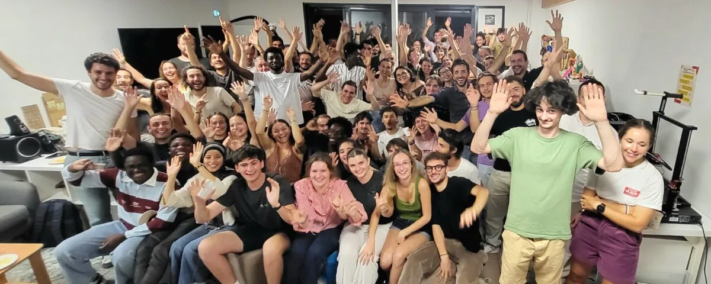

Léo Pichon
Maître de conférences
Institut Agro Montpellier · UMR ITAP, équipe DéMO
Je travaille sur la collecte participative d'observations spatialisées en agriculture (crowdsourcing ou farmsourcing) : comment concevoir ces projets, évaluer la qualité des observations qui sont collectées, développer des méthodes qui permettent de compenser leurs imperfections et les utiliser pour l'aide à la décision à l'échelle territoriale. Mon principal terrain d'étude est le suivi de l'état hydrique de la vigne avec le projet ApeX-Vigne, auquel contribuent chaque année environ 2 000 viticulteurs et conseillers viticoles.
Mes enseignements portent sur l'information spatiale et les usages du numérique pour l'aide à la décision en agriculture. Je suis responsable de la spécialisation AgroTIC (M2).
Projets de recherche et partenariats
- LabCom ANR (depuis 2025), avec la société Fruition Sciences
- Projet Feader (2022-2024) avec l'IFV, les chambres d'agriculture de l'Hérault et du Vaucluse et le syndicat des Côtes du Rhône
- Projet PRIMA (2020-2024) avec des partenaires italiens, portugais et espagnols
- Chaire d'entreprises AgroTIC : co-fondateur, animateur de 2016 à 2021, aujourd'hui enseignant-chercheur associé (2 écoles, 26 entreprises)
- Comités scientifiques : European Conference on Precision Agriculture (2023, 2025), GiESCO (2025), CORDiALL (2025)
Publications
Liste issue de mon profil ORCID.
Articles dans des revues à comité de lecture
- Ogoumond D.C., Tisseyre B., Pichon L. (2026). Seven years of spatial crowdsourcing in viticulture: lessons learned from the monitoring of vine water status with the Apex-vigne project. OENO One, 60(3), 9890. DOI
- Zhang Y., Pichon L., Pellegrino A., Tisseyre B. (2026). Potentials of crowdsourcing data for retrieving total transpirable soil water in a wine appellation. OENO One, 60(2), 9921. DOI
- Moinard S., Oger B., Brunel G., Ducanchez A., Crestey T., Faure P., Pichon L., Tisseyre B. (2025). A collaborative and low cost acquisition chain for collecting spatialized observations in agriculture. Computers and Electronics in Agriculture, 239, 111113. DOI
- Zhang Y., Pichon L., Roux S., Pellegrino A., Coulouma G., Tisseyre B. (2025). Retrieving total transpirable soil water in a rainfed vineyard using vine shoot growth, weather, and Sentinel-2 data. Agricultural Water Management, 318, 109760. DOI
- Ducanchez A., Brunel G., Oger B., Moinard S., Pichon L., Tisseyre B. (2025). Potential of handheld low-cost multispectral sensors for decision support in viticulture. Precision Agriculture, 26(4). DOI
- Zhang Y., Pichon L., Tisseyre B. (2025). A dataset of three vine water status indicators, weather records and soil available water capacity components collected from a rain-fed Mediterranean vineyard. Data in Brief, 111295. DOI
- Zhang Y., Pichon L., Pellegrino A., Roux S., Péruzzaro C., Tisseyre B. (2024). Predicting predawn leaf water potential while accounting for uncertainty using vine shoot growth and weather data in Mediterranean rainfed vineyards. Agricultural Water Management, 302, 108998. DOI
- Zhang Y., Pichon L., Roux S., Pellegrino A., Simonneau T., Tisseyre B. (2024). Why make inverse modeling and which methods to use in agriculture? A review. Computers and Electronics in Agriculture, 217, 108624. DOI
- Pichon L., Laurent C., Payan J.-C., Tisseyre B. (2023). Observation of shoot growth: a simple and operational decision-making tool for monitoring vine water status in the vineyard. OENO One, 57(1), 235-244. DOI
- Pichon L., Brunel G., Zhang Y., Tisseyre B. (2022). Towards a regional mapping of vine water status based on crowdsourcing observations. OENO One, 56(2), 279-290. DOI
- Pichon L., Brunel G., Payan J.-C., Taylor J., Bellon-Maurel V., Tisseyre B. (2021). ApeX-Vigne: experiences in monitoring vine water status from within-field to regional scales using crowdsourcing data from a free mobile phone application. Precision Agriculture, 22(3), 608-626. DOI
- Brunel G., Moinard S., Ducanchez A., Crestey T., Pichon L., Tisseyre B. (2021). Empirical mapping for evaluating an LPWAN (LoRa) wireless network sensor prior to installation in a vineyard. OENO One, 55(2), 301-313. DOI
- Pichon L., Taylor J., Tisseyre B. (2020). Using smartphone leaf area index data acquired in a collaborative context within vineyards in southern France. OENO One, 54(1), 123-130. DOI
- Pichon L., Leroux C., Macombe C., Taylor J., Tisseyre B. (2019). What relevant information can be identified by experts on unmanned aerial vehicles' visible images for precision viticulture? Precision Agriculture, 20(2), 278-294. DOI
- Leroux C., Jones H., Pichon L., Taylor J., Tisseyre B. (2019). Automatic harmonization of heterogeneous agronomic and environmental spatial data. Precision Agriculture, 20(6), 1211-1230. DOI
- Leroux C., Jones H., Pichon L., Guillaume S., Lamour J., Taylor J., Naud O., Crestey T., Lablee J.L., Tisseyre B. (2018). GeoFIS: an open source, decision-support tool for precision agriculture data. Agriculture, 8(6), 73. DOI
- Tisseyre B., Leroux C., Pichon L., Geraudie V., Sari T. (2018). How to define the optimal grid size to map high resolution spatial data? Precision Agriculture, 19(5), 957-971. DOI
- Pichon L., Ducanchez A., Fonta H., Tisseyre B. (2016). Quality of digital elevation models obtained from unmanned aerial vehicles for precision viticulture. OENO One, 50(3), 101-111. DOI
- Minasny B., McBratney A.B., Pichon L., Sun W., Short M.G. (2009). Evaluating near infrared spectroscopy for field prediction of soil properties. Soil Research, 47(7), 664-673. DOI
Chapitres d'ouvrage
- Bergez J.-E., Cheraiet A., Djafour S., Fort M.-A., Gobrecht A., Jonard G., Larbaigt J., Le Gallic A., Meyrieux C., Pichon L., Bellon-Maurel V. (2027). Innovative training approaches to codevelop digital technologies to foster agroecological practices: insights from the OccitANum Living Lab. In Rural Innovation Ecosystems and Agricultural Transition, 351-380. Springer Nature. DOI
- Pichon L. et al. (2026). In Bellon-Maurel V., Gauche K., Enriquez M.-L., Lyon-Caen N. (coord.), Appréhender l'agriculture numérique. 10 ans de recherche interdisciplinaire au sein de l'Institut #DigitAg. Éditions Quae. DOI
- Pichon L. (2023). Erfolgreiche Verbreitung digitaler Werkzeuge für Landwirte. In Dörr J. & Nachtmann M. (Eds.), Handbuch Digital Farming. Springer. DOI
- Pichon L. (2022). Successfully disseminating digital tools for farmers: a French perspective. In Dörr J. & Nachtmann M. (Eds.), Handbook Digital Farming. Springer. DOI
Communications dans des congrès
- Ogoumond D.C., Pichon L., Baragatti M., Tisseyre B. (2026). An automatic approach for removing spatial and temporal outliers in agricultural crowdsourcing datasets. CORDIALL, Montpellier. DOI
- Cheraiet A., Bellon-Maurel V., Pichon L., Gosme M., Bergez J.-E. (2026). Co-designing digital tools to foster capacity building for on-farm experimentation: first steps from the Occitanum living labs. International Farming Systems Association (IFSA), Montpellier, 29-30. HAL
- Ruiz V., Djafour S., Pichon L., Tisseyre B. (2025). Studying digital tools for mechanical weeding to better grasp the adoption of precision farming. Precision agriculture '25, Brill, 1089-1098. HAL
- Bourguignon A., Cheraiet A., Pichon L., Gosme M., Bellon-Maurel V. (2025). Potential of a low-cost self-built NDVI sensor as a decision-support tool for managing cover crop in viticulture. 15th European Conference on Precision Agriculture, Barcelone (poster). DOI
- Zhang Y., Pichon L., Taylor J.A., Oger B., Tisseyre B. (2023). Introducing Bayesian priors to semi-variogram parameter estimation using fewer observations. Precision agriculture '23, Wageningen Academic, 651-658. DOI
- Oger B., Pichon L., Hilgert N., Tisseyre B. (2023). A statistical test to evaluate the relevance of auxiliary time series to predict another time series. Precision agriculture '23, Wageningen Academic, 731-738. DOI
- Pavlenko T., Pichon L., Escolà A., Griepentrog H.W., Marinello F., Martínez-Casasnovas J.A., Masià J., Milics G., Paraforos D.S., Pelissier M., Matecny I., Taylor J., Tisseyre B. (2023). Adoption of precision agriculture across Europe: a case study on remote sensing. Precision agriculture '23, Wageningen Academic, 805-812. DOI
- Djafour S., Pichon L., Crestey T., Ploteau B., Tisseyre B. (2023). Designing relevant precision agriculture training courses for technical advisors. Precision agriculture '23, Wageningen Academic, 1075-1081. DOI
- Ploteau B., Brunel G., Pichon L., Ducanchez A., Crestey T., Moinard S., Tisseyre B. (2023). Experiences with teaching precision agriculture through reverse pedagogy. Precision agriculture '23, Wageningen Academic, 1091-1098. DOI
- Pichon L., Bopp O., Tisseyre B. (2021). Characterising within-field variability of vine water status with simple visual observations of shoot growth. Precision agriculture '21, Wageningen Academic, 179-186. DOI
- Fornieles Lopez E., Brunel G., Devaux N., Rançon F., Pichon L., Tisseyre B. (2021). Potential of temporal series of Sentinel-2 images to define zones of vine water restriction. Precision agriculture '21, Wageningen Academic, 543-550. DOI
- Lachia N., Pichon L., Marcq P., Taylor J., Tisseyre B. (2021). Why are yield sensors seldom used by farmers: a French case study. Precision agriculture '21, Wageningen Academic, 745-751. DOI
- Brunel G., Moinard S., Pichon L., Tisseyre B. (2021). Potential of time series of VIS images from connected static camera for decision support in vineyard. Precision agriculture '21, Wageningen Academic, 821-827. DOI
- Pichon L., Leroux C., Geraudie V., Taylor J., Tisseyre B. (2019). Investigating the harmonization of highly noisy heterogeneous datasets hand-collected over the same study domain. Precision agriculture '19, Wageningen Academic, 735-741. DOI
- Lachia N., Pichon L., Tisseyre B. (2019). A collective framework to assess the adoption of precision agriculture in France: description and preliminary results after two years. Precision agriculture '19, Wageningen Academic, 851-857. DOI
- Brunel G., Pichon L., Taylor J., Tisseyre B. (2019). Easy water stress detection system for vineyard irrigation management. Precision agriculture '19, Wageningen Academic, 935-942. DOI
- Pichon L., Besqueut G., Tisseyre B. (2017). A systemic approach to identify relevant information provided by UAV in precision viticulture. Advances in Animal Biosciences, 8(2), 823-827 (ECPA 2017). DOI
- Crestey T., Pichon L., Tisseyre B. (2017). Potential of freely available remote sensing visible images to support growers in delineating within field zones. Advances in Animal Biosciences, 8(2), 372-376 (ECPA 2017). DOI
Articles techniques et de diffusion
- Pichon L., Brunel G., Zhang Y., Tisseyre B. (2024). Vers une cartographie régionale de l'état hydrique de la vigne basée sur des observations collaboratives. Revue Française d'Oenologie, Cahier technique. HAL
- Pichon L., Brunel G., Zhang Y., Tisseyre B. (2023). Vers une cartographie régionale de l'état hydrique de la vigne basée sur des observations collaboratives. IVES Technical Reviews, vine and wine. DOI
- Pichon L. (2022). Comment réussir un projet de crowdsourcing d'observations spatialisées en agriculture ? Annales des Mines, Enjeux numériques, 19, 60-66. HAL
- Lachia N., Pichon L., Fourcaudot R., Tisseyre B. (2021). Grazing livestock: a sector poorly equipped with digital tools with specific needs. Fourrages, 247, 97-103. HAL
- Pichon L., Brunel G., Payan J.-C., Tisseyre B. (2020). Apex-Vigne: a mobile application to facilitate the monitoring of growth and estimate the water status of the viticulture plots. IVES Technical Reviews, vine and wine. DOI
- Lachia N., Pichon L., Tisseyre B. (2018). Comment observer les usages de l'agriculture numérique permet de mieux accompagner les professionnels. Innovations Agronomiques, 67, 49-61. DOI
- Pichon L., Leroux C., Tisseyre B. (2018). A systemic approach to identify relevant information provided by UAV in precision viticulture. Innovations Agronomiques, 67, 23-36. DOI
- Besqueut G., Pichon L., Tisseyre B. (2015). Les drones en viticulture, quels enjeux, quels services ? Revue des Oenologues, 157, 12-14. HAL
Thèse
Pichon L. (2021). Development of a crowdsourcing approach adapted to agriculture specificities: the case of monitoring vine water status with the shoot growth approach. Doctorat, Montpellier SupAgro. HAL · theses.fr · vidéo de la soutenance
Enseignement
J'enseigne à l'Institut Agro Montpellier (département SABP) les outils et méthodes de l'information spatiale et leurs usages pour l'aide à la décision en agriculture, de la L3 au M2 (environ 250 h éq. TD par an). J'y privilégie l'approche par compétences, la pédagogie par projet et le lien avec le monde professionnel.
- Spécialisation AgroTIC, M2, responsable depuis 2023 (en partenariat avec Bordeaux Sciences Agro)
- Unité d'enseignement Environmental Data Processing and Analysis, M1, responsable depuis 2022
- Unité d'enseignement Information spatiale en agriculture et en environnement, L3, responsable depuis 2022

J'ai conçu un jeu de cartes pour apprendre les concepts de la géomatique sans logiciel SIG, aujourd'hui utilisé dans plusieurs établissements, et lancé en 2024 un réseau d'échange de pratiques pédagogiques entre enseignants-chercheurs des écoles d'agronomie et vétérinaires.
Encadrement
Doctorat
- Don Ced Ogoumond (depuis 2024) : Anomaly detection and use of crowdsourced data in agriculture: application to monitoring vine water status at the regional scale.
- Bekanti Kouassi (2021-2025) : Transition numérique et mise en oeuvre de l’agroécologie : une analyse du rôle des coopératives vitivinicoles et de fruits et légumes
- Yulin Zhang (2021-2024) : Model inversion from crowdsourcing agricultural data: application to the estimation of crop and soil parameters in viticulture. Médaille d'argent Dufrénoy de l'Académie d'agriculture.
Une dizaine de stages de recherche encadrés (L2 à M2) depuis 2015, et une vingtaine de stages tutorés chaque année.
Parcours
- 2022 - Maître de conférences, Institut Agro Montpellier
- 2021 Doctorat en sciences agronomiques, École doctorale GAIA
- 2016 - 2021 Ingénieur de recherche, responsable de la chaire AgroTIC, Montpellier SupAgro
- 2013 - 2016 Ingénieur de recherche, responsable d'AgroTIC Services, Montpellier SupAgro
- 2010 - 2013 Chef de produit Agreo Conseil, Smag
- 2010 Ingénieur agronome, Montpellier SupAgro
Contact
UMR ITAP, Institut Agro Montpellier
Bâtiment 21, 2 place Pierre Viala, 34060 Montpellier
leo.pichon@supagro.fr